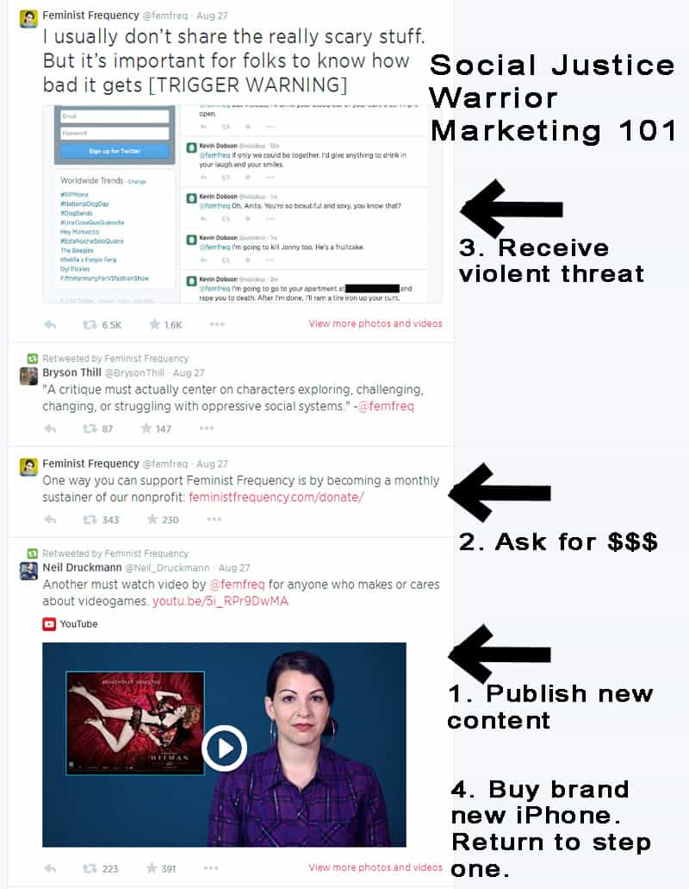
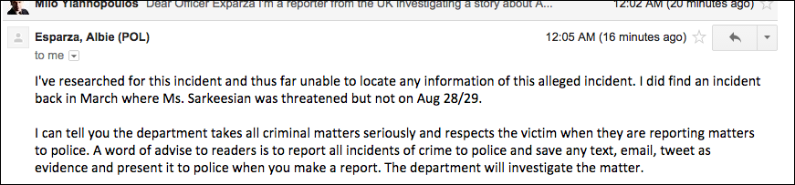
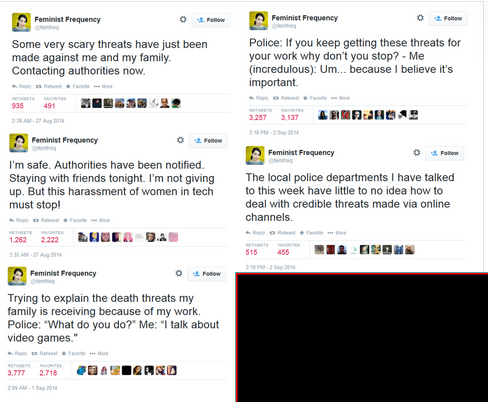

Daryush "Roosh" Valizadeh created ROK in October 2012. You can visit his blog at RooshV.com or follow him on Twitter and Facebook.


Two independent journalists have confirmed with the San Francisco Police Department that Anita Sarkeesian, a video game social justice warrior, may have used false pretenses to raise money for her non-profit entity. The police have said that she has not contacted them as she claimed after receiving a Twitter death threat in August. Under Federal law, this may put her on the hook for felony wire fraud.
Two weeks ago we presented the case that Sarkeesian faked death threats against her in an effort to raise money and gain attention to her videos.
Immediately the gaming press community rallied to her defense, publishing article after article discussing harassment and misogyny in the gaming community. The only problem? The death threats against Anita Sarkeesian are cleary fake, and most likely made by Anita herself.
She used the death threat against her to publish several tweets that simultaneously marketed her work while also raising money donations:

Only one hour of time separated her request for money from revealing the alleged death threat. It doesn’t take a professional marketer to see that Sarkeesian timed the tweets to maximize the amount of donations she would receive. The legal problem for Sarkeesian is that fundraising through public deceit is against the law in America, as Mike from Danger & Play helpfully pointed out.
A New York woman was recently sentenced to eight months in jail for fundraising under false pretenses:
A New York City woman was sentenced in US District Court on Tuesday, October 15, to serve eight months in prison, with two years of probation to follow, on convictions for wire fraud and for making false statements in connection with a scam fundraising scheme that she created on the Internet stemming from the Sandy Hook School shooting incident last December.
Sarkeesian’s innocence rests upon the death threat she received being genuine, but two independent journalists have just uncovered additional information that puts a wide open hole through her allegation.
Davis Aurini, while working on a documentary about social justice warriors and the damage that they are causing society, was able to get in touch with the San Francisco Police Department about the report that Sarkeesian filed. The problem: she never contacted them.
Aurini: I’m calling about an incident which occurred in your district on August 26th to a Miss Anita Sarkeesian; she is a prominent cultural critic who received a number of death threats over Twitter, which wound up driving her out of her own home. This has been reported throughout the gaming media, as well as in other mainstream sources such as the LA Times, and The Telegraph-
Esparza: I’m very familiar with the case… the incident. There’s nothing, there’s no record of any incident occurring on the 28th of August. I’ve been trying to reach her for the past two days. If you have a way to contact this person and ask them for a case number, we’d appreciate that. There’s no record from our dispatch centre that I called and asked. There’s no record of any report being taken. So, when I saw her tweets it says “authorities”; Anita should make sure she reports to the San Fran police how she did this because there’s no record.
Milo Yiannopoulos, a journalist working out of the United Kingdom, was told the same information.

As Yiannopoulos points out, the police record contradicts the bulk of Sarkeesian’s story:

In the top right tweet she even makes up a dialogue she had with the police, which, according to them, could not have possibly occurred. She repeatedly references local police but they have no record of her call.
Thanks to the work of Aurini and Yiannopoulos, the main part of her story is confirmed to be suspect, turning the onus on Sarkeesian to provide evidence she was actually threatened. She won’t do this because we can reasonably assume the threat was created by her own hand. Authorities weren’t contacted because her life was never in danger. Unless the police parades a man before us as the horrible misogynist who wanted to kill Sarkeesian, the most logical conclusion is that she is lying to the public about the supposed threat she received.
This isn’t the first time that Sarkeesian was caught red-handed in a lie. Even though she pretends to be a girl gamer, she doesn’t even like video games, and is simply using it as a platform to push her SJW agenda, as so many real gamers have long suspected:
While dozens of blogs wrote about professional victim Sarkeesian being threatened (by herself), two publications of note had the largest reach is spreading what could be soon investigated as a Federal felony.
Soraya Nadia McDonald (@SorayaTWP) from the Washington Post swallowed her story without making a single call to verify it:
But this week hit a new low: The attacks were so menacing and so personal, Sarkeesian was forced to call the police and leave her home. Someone let her know they’d tracked down her home address and the names and address of her parents. The individual threatened to kill them, too.
And Julie Bort (@Julie188), an editor from the Business Insider, did much of the same:
And here’s the most horrifying part. She also shared the specific list of threats being tweeted at her (warning: it’s very graphic). They are so appalling that we won’t run them on Business Insider. What we will say is that a person threatened to rape, mutilate, and “drink her blood.”
Bort’s parroting of Sarkeesian’s now debunked story is even more galling considering that she is an editor. It’s her job to prevent exactly this very type of sloppy reporting.
Important questions are raised when the mainstream media is complicit in reporting a false story that enriches the lying party. Are McDonald and Bort acting in a public relations capacity for Anita? Have they received money from her to report on a story that wasn’t fact checked? Are they planning to publish a retraction to a story that is becoming more like Swiss cheese with ever passing day? Does McDonald and Bort have an existing bias or agenda that facilitated them taking Sarkeesian’s word for it? Does their reporting put The Washington Post and Business Insider in legal danger by those who gave money to Sarkeesian under false pretenses?
The fact that the only outlet asking these questions is ROK, a site that has a goal of helping men get laid (among others), speaks volumes on the state of the American media today. They don’t care that Sarkeesian lied and they don’t care about fixing their mistake. As long as they got a story—any story—about “misogynist” men doing mean things to women, their news day was successful.
Many of you are probably wondering how Sarkeesian could get so careless in constructing a threat that can be torn apart with a basic screenshot and a couple phone calls. The reason is that she, along with her SJW gang, have the full backing of the gaming media and mainstream media establishment to believe whatever bullshit they come up with. It’s amazing to me, a microbiology major and not a journalist major, that not one journalist or blogger inquired for the specifics on how the authorities were contacted.
It wouldn’t have taken more than three or four questions to bring doubt to her story, saving possibly thousands of dollars in donations that were raised to Sarkeesian’s business entity from people who believed her because they read it on a site like The Washington Post or Business Insider, outlets that—up to now—were assumed to do the most basic of fact checking.
In light of Gamer Gate, these new revelations concerning Sarkeesian show that no form of media is safe from the SJW and feminist agenda, and that we must do all the fact checking ourselves. The entire media establishment in the United States is potentially corrupt. Proceed accordingly.
UPDATE: The police have changed their story and now state that they were contacted.
Read Next: Did Anita Sarkeesian Fake Death Threats Against Herself?
{kind=link}
{kind=link}